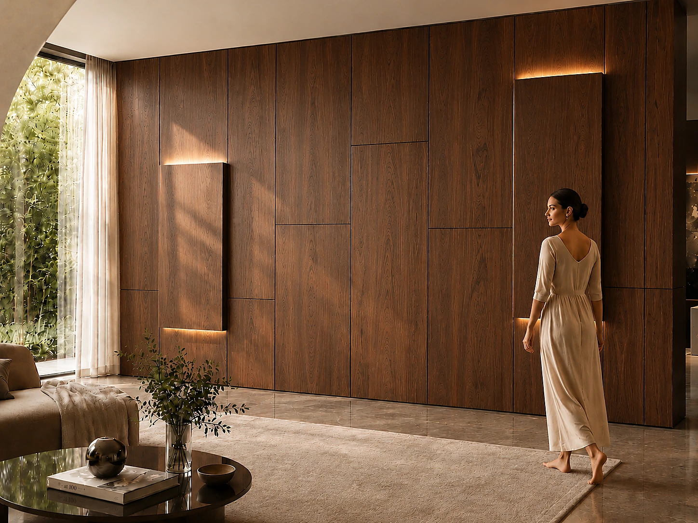
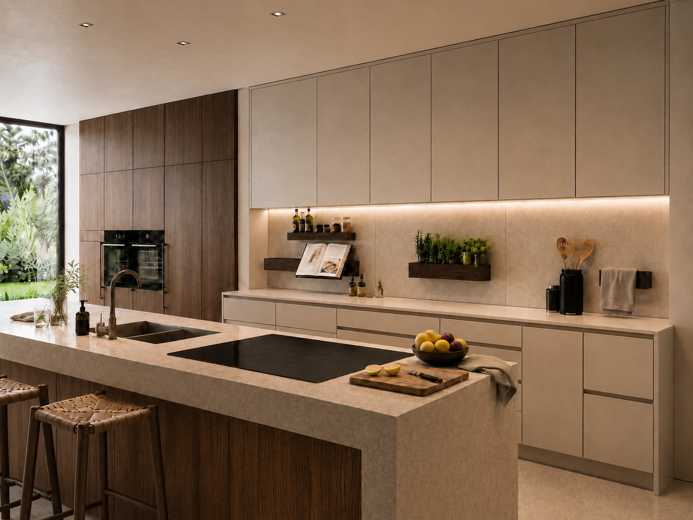

05 · Applicazioni
Un sistema.
Ogni spazio.
La stessa infrastruttura cambia linguaggio, funzione e materia seguendo il contesto.

01 · Living
Abitare.
Una parete che cambia insieme alla casa.
TV, luce, contenimento, mensole e materia convivono in una composizione unica, aggiornabile nel tempo.
02 · Hospitality
Accogliere.
Camere, corridoi, reception e aree comuni.
Manutenzione selettiva, tecnica nascosta e superfici rinnovabili riducono tempi di fermo e interventi invasivi.

03 · Retail
Esporre.
Lo spazio vendita si riconfigura senza perdere identità.
Mensole e accessori magnetici seguono collezioni, campagne e nuovi prodotti senza forare la parete.

04 · Workspace
Vivere.
Ordine, tecnologia e flessibilità.
Dagli uffici agli spazi condivisi, IconicWall integra funzioni e consente agli ambienti di adattarsi ai nuovi modi di lavorare.